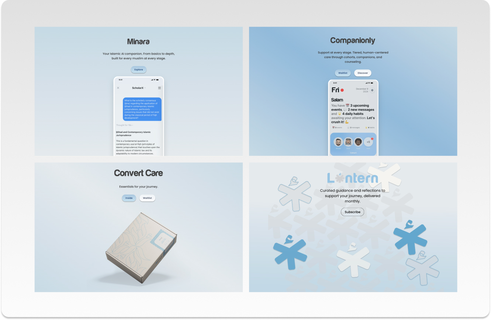
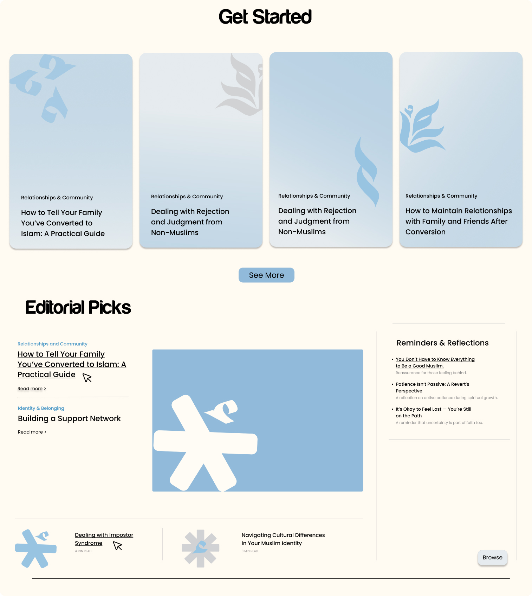

Revert Reach — Building a Digital Home for Reverts
Designing a digital ecosystem that adapts as it grows.
Overview
Revert Reach came to us with a clear vision but evolving needs. They wanted a website that didn't just exist alongside their app — it needed to represent their growing ecosystem of products: Companion Connect, Minara AI, The Lantern, and the Revert Reach Shop. Initially imagined as a functional platform for users to access these tools directly, the concept later evolved into a promotional and informational site designed to inspire users to download the app.
As the lead UI/UX designer, I was responsible for translating this evolving brand identity into a clear, intuitive, and emotionally resonant experience.
The Challenge
Unlike Hiyd.ai, Revert Reach didn't start with a fixed direction. The brand's tone, structure, and even product priorities shifted throughout the process — which became both the main challenge and my biggest learning opportunity.
Early layouts were built to function like a product dashboard. Midway through, the team realized they wanted to position the site as a storytelling hub — a place that celebrated their values and guided visitors toward the app. That meant reworking the information hierarchy, CTAs, and overall flow to serve a new purpose while preserving the clarity and consistency we'd already built.
Designing Through Change
To stay adaptable, I focused on creating modular sections that could flex with evolving needs: hero blocks for each sub-brand, scannable feature grids, and repeatable CTA components.
The goal was to make every page feel distinct yet unified under the Revert Reach identity. I leaned on visual hierarchy, whitespace, and structured typography to balance storytelling with functionality. The product pages now feel cohesive, whether you're exploring Minara's AI tools or the Companion Connect tiers.

Tools & Iteration
This project was a constant collaboration between the design and strategy teams. I used Figma and Figma Make to prototype and test responsive layouts quickly, incorporating feedback in real time.
To push creative boundaries, I also leveraged ChatGPT as a design assistant — testing different content flows, CTA placements, and phrasing options. It was my way of applying Shopify's "AI-builder mindset": using AI to extend design thinking, not automate it.
Outcome
The final website became a promotional bridge connecting Revert Reach's brand story to its growing app ecosystem. It now serves as the visual anchor for their digital presence, giving each sub-brand a clear voice while tying them together through consistent design language. The project has since launched successfully, with the client thrilled by how cohesive and purposeful it feels.
Reflection
Revert Reach taught me that good design is as much about adaptability as it is about structure. Working through shifting goals forced me to lead with curiosity rather than control — to ask better questions, anticipate change, and iterate without ego.